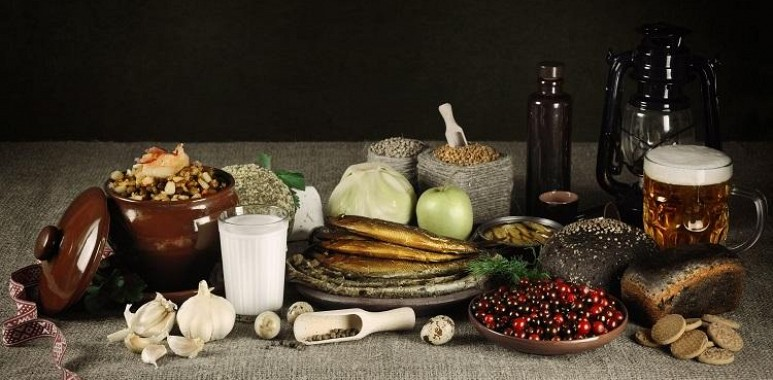

Nacionālie ēdieni
Latviešu virtuvē galvenokārt ietilpst vietējie lauksaimniecības produkti kā zivis, rudzi, kartupeļi, kvieši, mieži, kāposti, sīpoli, olas un cūkgaļa, piens, biezpiens, skābais krējums, sieri.

Populārākais spota veids
Ja domā, ka šobrīd Latvijā populārākais sporta veids ir hokejs vai skeletons, tad kļūdies, jo tā nav. Lai arī cik tas neliktos dīvaini, nesenā https://kazinopasaule.lv/ veiktā aptauja liecina, ka šobrīd populārākais sporta veids Latvijā ir vieglatlētika un skriešana. Iespējams, tāpēc, ka ar to ir tik viegli nodarboties.
Nacionālie simboli
Oficiālie Latvijas simboli ir karogs, himna un ģerbonis.